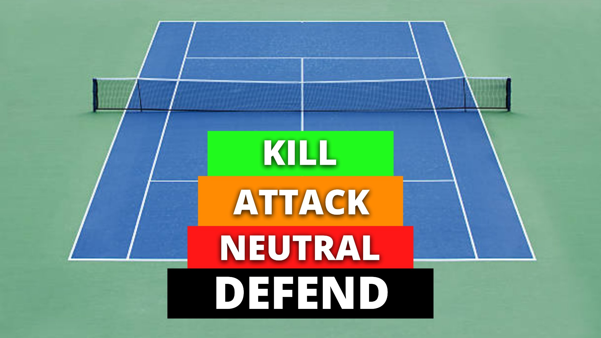
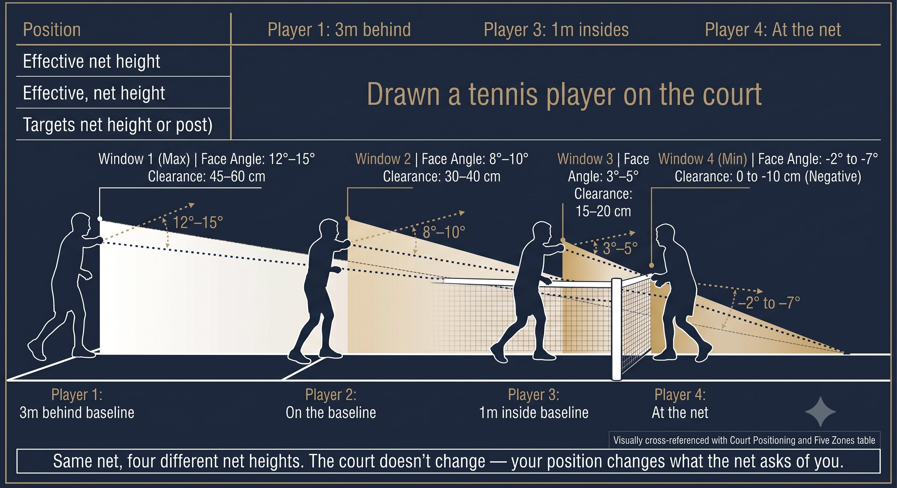
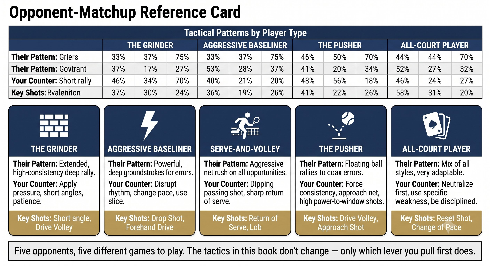

Chapter 26: Court Geometry and Shot Selection
(English version of Chapter 26 in the United Tennis Handbook)
CHAPTER 26

Figure 1
COURT GEOMETRY & SHOT SELECTION
Tactics
The court dictates. You don't choose shots — the geometry chooses for you.
The Court Is a Math Problem
78 feet long, 27 feet wide for singles, a 3-foot net at center. Every shot is a geometry solution.
— Henry Pham
Court geometry creates mandatory shot windows. You don't "decide" crosscourt versus down the line — the position of the ball and your own position dictate the high-percentage play.
The Five Zones
Figure 26.1: The court isn't empty space — it's five zones with five different default plays. Zone 1-2 crosscourt. Zone 3 is your green light. Zone 4-5 are attack zones. Memorize this map once and every shot after this chapter just follows the zone.

Figure 2
RULE: Deep means crosscourt. Short means down the line or an angle. The geometry is not negotiable.
Wardlaw's Directionals (Simplified)
Coach's Tip
Directionals aren't rules — they're probability maps. Crosscourt deep makes about 80% of the time. Down the line deep makes about 50%. Play the math until the ball gives you permission to attack.
The 4-Shot Rally Pattern (70% of Points)
– Serve or return.
– Serve+1 or Return+1 — the first groundstroke after the serve or return.
– Serve+2 or Return+2 — the second groundstroke.
– The point ends: a winner, an error, or a net approach.
The first four shots decide 70% of points. Tactics means optimizing Serve+1 and Return+1.
Shot Selection Decision Tree
At contact, ask in this order:
1. Can I attack? (Short, high, mid-court.) Yes: attack down the line or an angle. No: go to 2.
2. Can I hurt them? (Opponent off-balance, a weak side.) Yes: target the weakness. No: go to 3.
3. Can I neutralize? (Deep, heavy.) Crosscourt deep, reset. No: go to 4.
4. Can I survive? (Stretched, late.) A high crosscourt ball or a lob. Buy time.
RULE: The default is crosscourt deep. Only deviate when the ball gives you a green light — short, high, weak, or the opponent vulnerable.
Figure 26.2: Four questions, in order. Can I attack? Can I hurt them? Can I neutralize? Can I survive? The first yes wins. No more thinking -- just the tree.

Figure 3
Court Positioning: Where You Stand Changes Everything
Figure 26.3: The net doesn't change height — your position does. Three meters back and the window is wide. On the baseline it shrinks. Inside the baseline and you need a closed face. Same net, completely different geometry.

Figure 4
Recovery Positioning
– After a crosscourt shot: recover to the center of your own crosscourt angle, not the center of the court.
– After a down-the-line shot: recover slightly toward the down-the-line side, since you opened up the crosscourt.
– After an approach shot: move to net, at the center of the angle bisector.
– Never recover to "the middle of the baseline." Recover to the middle of your own angle.
Coach's Tip
Recovery position is the bisector of the opponent's possible replies. If you hit crosscourt, the opponent can go crosscourt or down the line. You recover to cover the middle of that range.
Figure 26.4: The middle of the court and the middle of your coverage are two different points. Find the bisector of what your opponent can actually hit, not the middle of the baseline.

Figure 5
Tactical Patterns by Player Type
Figure 26.5: Five opponents, five different games to play. The tactics in this book don't change — only which lever you pull first does.
Tactics Checklist
DEEP MEANS CROSSCOURT. SHORT MEANS ATTACK. NET MEANS ANGLE. RECOVER TO THE BISECTOR.
– Default rally ball: crosscourt deep, 80%+ make rate.
– Attack down the line only on: a short ball, a weak reply, an off-balance opponent, or when you're inside the baseline.
– Change direction on a crosscourt ball only when you're balanced and the ball is attackable.
– Recover to the bisector of the opponent's possible replies, not the center of the court.
– Serve+1: forehand if possible. Dictate the direction.
– Return+1: neutralize. Deep crosscourt. Deny the server's S+1.
– The first four shots decide 70% of points. Win the S+1 / R+1 battle.
– Against grinders: move them (angles, drop shots, net). Against attackers: high percentage, deep, take time away.
Where This Leads
This chapter covers court geometry and shot-selection tactics. Chapter 27 covers singles patterns and doubles systems strategy. Chapter 28 covers the mental game. Chapter 29 covers the physical game. Chapter 30 is the unified quick reference card.